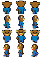
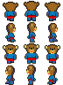
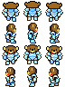
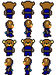
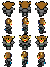
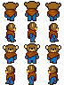
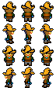
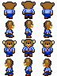
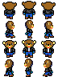

| Players | Opponents |
|---|---|
|
basic - this is the player in the initial level

speedo - this is the player when swimming on the surface (or running on the beach! TODO: put character in horizontal position for swimming)

divesuit - this is the player when working deep beneath the surface

commander - this is the player after achieving mid-level points in space

admiral - this is the player after achieveing top-level points in space
armour - this is the player when battling fierce opponents (cons: taller (28px vs 24px))
armour2 - without a helmet

ewok - this is the player in forest scenes

(not sure if farmHat or farm is better...also against farmHat is 28px vs 24) farmHat - this is the player on the farm  farm - " " office - this is the player in the office  street - this is the player on the street  | TODO: create opponent sprites |